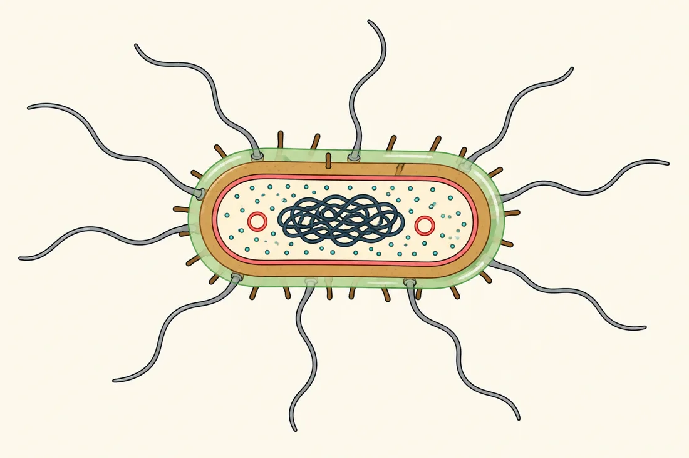

Domingo: asado familiar. Lunes: el tío Ramón no se levanta.
Cada uno sospecha de algo distinto. Nadie vio al responsable.
Tres etapas, tres llaves: quién es, cómo funciona y qué pasó.
Al final se descarga la bitácora completa en PDF.

Si ya empezaron en esta computadora, escriban exactamente los mismos datos: el expediente se abre donde quedó.
El caso se resuelve con tres llaves: quién es, cómo funciona y qué pasó. Cada etapa entrega una, y se abren en orden. Todo lo que respondas queda en tu bitácora, que al final se descarga en PDF.
El progreso queda guardado en esta computadora. ¿Este no es tu expediente ()?
Acá se va armando tu bitácora con todo lo que registrás. Al final se descarga en PDF. Abajo podés sumar notas propias: lo que te sorprendió, datos para recordar o dudas.